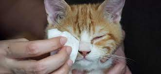

Prepare a weak saline solution by mixing 1 cup of boiled, cooled water with ¼ teaspoon of salt
Dip a clean cotton pad in warm salty water
slowly open the cats eye with fingers

Wipe the eye from the inner corner outward, using a fresh pad for each wipe.